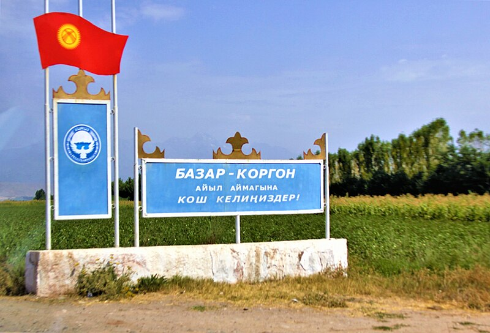
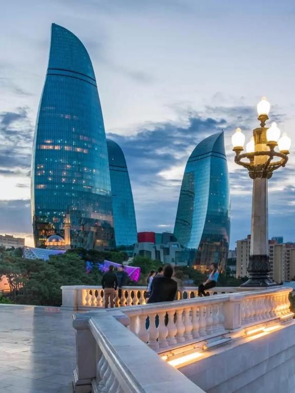

London

The City of London, widely referred to simply as the City, is a city, ceremonial county and local government district that contains the ancient centre, and constitutes, alongside Canary Wharf, the primary central business district (CBD) of London and one of the leading financial centres of the world. It constituted most of London from its settlement by the Romans in the 1st century AD to the Middle Ages, but the modern area named London has since grown far beyond the City of London boundary. The City is now only a small part of the metropolis of Greater London, though it remains a notable part of central London. Administratively, the City of London is not one of the London boroughs, a status reserved for the other 32 districts. It is also a separate ceremonial county, being an enclave surrounded by Greater London, and is the smallest ceremonial county in England.
Paris

The City of Paris is the centre of the Île-de-France region, or Paris Region, with an official estimated population of 12,271,794 inhabitants on January 1, 2023, or about 19% of the population of France,[2] making the region France's primate city. The Paris Region had a GDP of €765 billion in 2021, the highest in the European Union.[8] According to the Economist Intelligence Unit Worldwide Cost of Living Survey, in 2022, Paris was the city with the ninth-highest cost of living in the world.
New-York

New York, sometimes called New York State, is a state in the Northeastern United States. A Mid-Atlantic state, New York borders New England, and has an international border with Canada. With almost 19.7 million residents, it is the fourth-most populous state in the United States and seventh-most densely populated as of 2022. New York is the 27th-largest U.S. state by area, with a total area of 54,556
Bazar-Korgon
Bazar-Korgon (Kyrgyz: Базар-Коргон; Uzbek: Bozorqoʻrgʻon) is a town in Jalal-Abad Region of Kyrgyzstan.[1] Formerly a large village, it was established as a city in January 2021 from the former rural community (ayyl aymagy) of Bazar-Korgon (villages Bazar-Korgon, Besh-Badam, Jeti-Koshkon and Kök-Alma) and part of the rural community Kengesh (villages Sovet, Auk, Kyzyl and Orto-Say).[2] Its population was 41,011 in 2021.[3] The majority of its inhabitants are ethnic Uzbek (approximately 80 percent) and the remaining 20% are predominantly ethnic Kyrgyzs. The town has a large open air market. Shared taxis to the regional capital Jalal-Abad depart every 15 to 20 minutes.
Dubai

In the eastern Arabian Peninsula on the coast of the Persian Gulf,[13] it is a major global transport hub for passengers and cargo.[14] Oil revenue helped accelerate the development of the city, which was already a major mercantile hub. A centre for regional and international trade since the early 20th century, Dubai's economy relies on revenues from trade, tourism, aviation, real estate and financial services.[15][16][17][18] Oil production contributed less than 1 percent of the emirate's GDP in 2018.[19] The city has a population of around 3.49 million (as of 2021).[20]
Baku
Baku (US: /bɑːˈkuː, ˈbɑːkuː/, UK: /bæˈkuː, ˈbækuː/;[7][8] Azerbaijani: Bakı [bɑˈcɯ] ⓘ) is the capital and largest city of Azerbaijan, as well as the largest city on the Caspian Sea and in the Caucasus region.[9] Baku is 28 metres (92 ft) below sea level, which makes it the lowest lying national capital in the world and also the largest city in the world below sea level. Baku lies on the southern shore of the Absheron Peninsula, on the Bay of Baku. Baku's urban population was estimated at two million people as of 2009.[10] Baku is the primate city of Azerbaijan—it is the sole metropolis in the country, and about 25% of all inhabitants of the country live in Baku's metropolitan area.